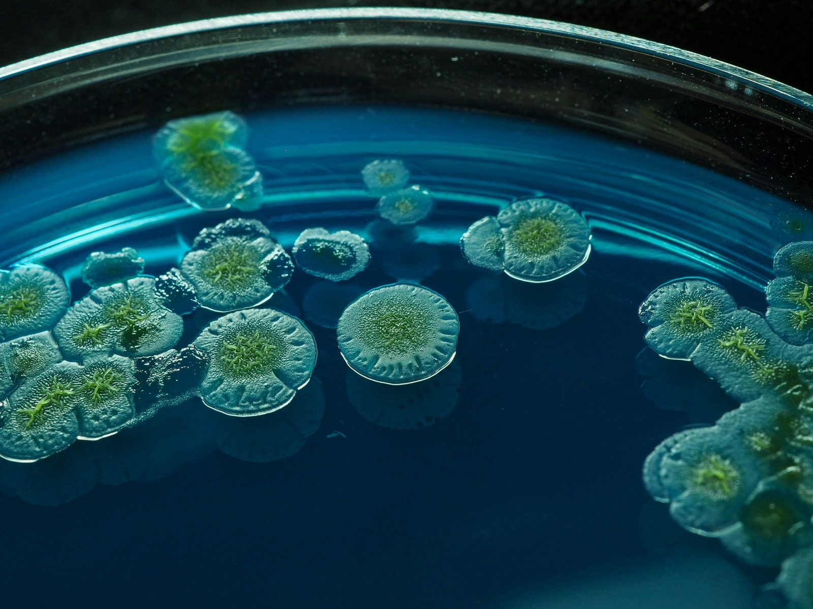
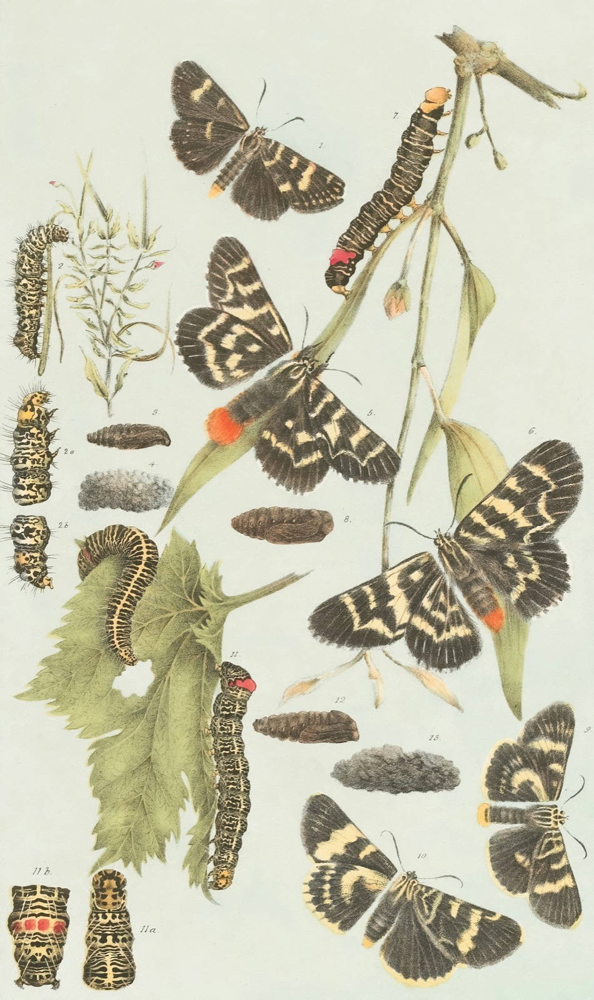
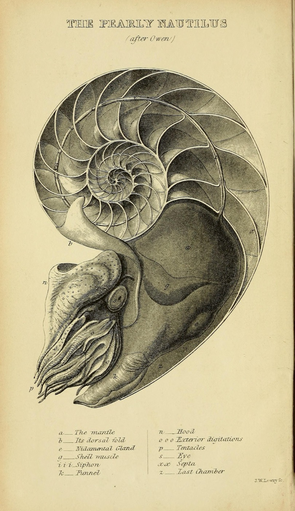

7 materialer
Biologi
Celle, enzym, makromolekyler og hormonel regulering — bygget til at blive skruet på undervejs.
5 simuleringer
1 forløb
1 spil
Se biologi-simuleringerne →
Interaktive simuleringer til biologi og naturgeografi. Kør dem på tavlen, eller lad eleverne gå i gang selv.
 Genetik
Genetik
CellerFire temaer, der går igen på tværs af begge fag.
Celle, enzym, makromolekyler og hormonel regulering — bygget til at blive skruet på undervejs.
Klima, tryk og vand — simuleringer, forsøgsvejledninger og opgaver med facit.
Det er dem, siden handler om. Alle kører i browseren uden login — sæt dem på tavlen, eller giv eleverne linket.
Skru på koncentrationen, og se cellen svulme eller skrumpe.
Byg kulhydrater, proteiner og fedt af de rigtige byggesten.
Find optimum — og se enzymet denaturere, når det bliver for varmt.
Følg nedbrydningen over tid, og aflæs jodprøven undervejs.
Fire hormoner over 28 dage — flyt ægløsningen, og se kurverne følge med.
Sollys ind, varme ud — og hvad gasserne gør ved regnskabet.
Albedo, tilbagestråling og feedbacks lagt oven på grundmodellen.
Send luftpakken over bjerget, og se præcis hvor regnen falder.
Køl luften ned til dugpunktet, og se kondensationen sætte i gang.
Varm og kold overflade side om side — hvor blæser vinden hen?
Vejledninger, opgaver og spil ligger i hver sin stak — så du altid ved, hvad du åbner.
Trin for trin med udstyrsliste, sikkerhed og forventet resultat.
Feltforsøg med jordprøver, målskema og databehandling.
Byg sæt med begreber, og træn dem som flashcards, quiz eller matchspil.
EksamenHold tiden ved mundtlig eksamen — forberedelse, prøve og votering.
PlanlægningKalender med overblik over årets arbejdstid, 2026/27.
UndervisningTimer, moduler og pauser på skærmen i klassen.
KlassenTræk elever tilfældigt, og fordel dem i grupper.


Gamle plancher og stik til print, plakater og forsider. Fri af ophavsret — hent dem i fuld opløsning.
Åbn kabinettet →